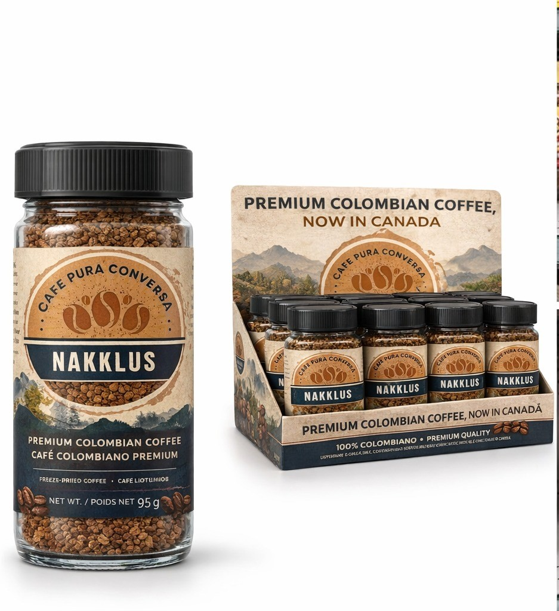
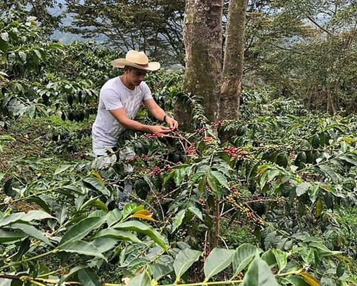
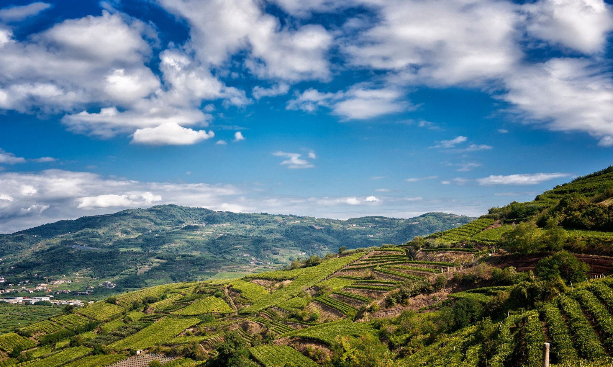
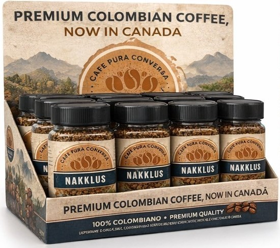

Nuestro Café
Pasa el mouse por cada card y haz clic para conocer más

Producto
Café colombiano liofilizado que conserva las características del café recién tostado

Sostenibilidad
Café cultivado en fincas colombianas de altura con comercio justo

Producción
Granos arábica seleccionados con proceso de liofilización

Perfil de Sabor
Aroma intenso, sabor balanceado y cuerpo medio

Presentación
Envase de vidrio reutilizable premium de 95g